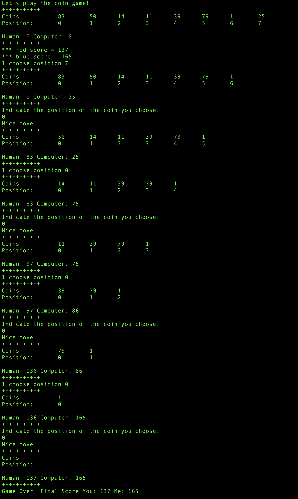

Greedy Coin Game
This assignment will involve playing the Greedy Coin game using the
Red-Blue strategy.
This game and this strategy is described in the following document -
Greedy Coins.
Starting Files
- GreedyCoinGame.java
This program reads in a file consisting of a layout of coins:
- file1.txt
- file2.txt
- file3.txt
- file4.txt
- file5.txt
Complete GreedyCoinGame.java by using the java.util.LinkedList class, which implements
the java.util.List interface. You must use
generics when specifying the LinkedList.
As you read in each coin from the input file, you will place the
coin in your LinkedList. After you
have read in all coins, apply the red-blue strategy to determine
which coins you will select. You will run this as a game, prompting
the player to enter a position of their next coin. Once the player
has chosen, the computer (your game) will choose next, choosing the
coin based upon the Red-BLue strategy.
Below is an example of how the game progresses:

Extra Credit
Up to 10 extra credit points will be awarded if you use your own
implementation of a linked list, rather than the Java API. Your
implementation must support generics.
Submit the following files to the Canvas Dropbox:
- GreedyCoinGame.java
- List.java and LinkedList.java
(both using generics) if you completed the extra credit.